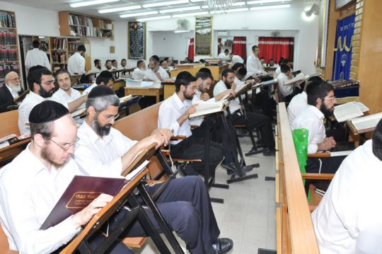

העיר אופקים מונה כ-000,30 תושבים וע"פ כל מדד היא נחשבת כעיירת פיתוח. במשך שנים
רבות העיר התנהלה ע"י וועדה קרואה דבר שעיכב את התפתחות העיר. לאחרונה נחתם בה
הסכם גג גדול שיביא לפיתוחה המואץ וייצובה הכלכלי.
כ-%40 מתושבי העיר חרדים.
הקהילה החרדית וותיקה מאוד בת כ-40 שנה ונוסדה ע"י מרן רשכבה"ג הגרא"מ שך זיע"א
שהעמיד שם ישיבה בראשות הגאונים הגדולים רבי יעקב הורוביץ ורבי חיים קמיל זצ"ל.
נציגים בעירייה- 3 דגל התורה בראשות הרב אברהם דייטש סגן רה"ע ו- 3 ש"ס.
הקהילה מונה כ-000,2 משפחות חרדיות, מתוכם למעלה מ-000,1 מתפללי נוסח אשכנז, כאשר
ריכוז זה הוא הריכוז הגדול ביותר בפריפריה החרדית.
בקהילה ישנם 5 תלמודי תורה, 3 בתי ספר בית יעקב יסודי, 3 ישיבות קטנות, 3 תיכונים )הגדול
שבהם שייך למרכז בית יעקב בראשות הרב ליברמן( ו-2 סמינרים, האחד של הרב כהן